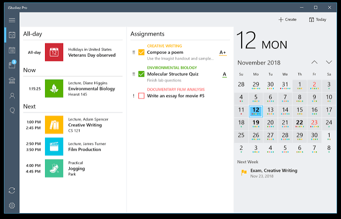

Category: Web App —
BSIT Student Study & Assignment Planner
Built to help college students organize subject deadlines, lab activities, and exam schedules in one clean interface. Features task filtering, priority tags, and persistent browser storage without needing a backend server.
Technologies Used
- HTML5
- CSS3 (Grid & Flexbox)